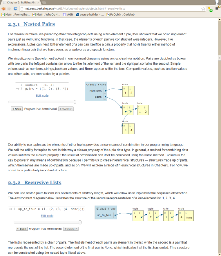

LEARN to program in Python by writing code and visualizing executionOnline Python Tutor enables teachers and students to write Python programs directly in the web browser, execute those programs, and then step forwards and backwards through execution to view the run-time state of data structures. For example, here is a recursive function that finds the sum of linked list elements. Click the “Forward” button to start stepping through execution. Over 100,000 people so far have used Online Python Tutor to understand and debug their programs, often as a supplement to textbooks, lecture notes, and online tutorials. Instructors in over a dozen universities such as MIT, UC Berkeley, UC Davis, Sonoma State University, the University of Washington, the University of Waterloo, the University of Toronto, Luther College, and Swarthmore College have adopted it for teaching introductory computer science courses. We are seeking partnerships with educators at all grade levels. Please email philip@pythontutor.com if you are interested. |
EMBED visualizations in digital textbooksUsing just one line of JavaScript code, you can embed an Online Python Tutor visualization within your web page. For example, the HTML textbook for the introductory CS course at UC Berkeley (CS61A) contains dozens of embedded visualizations: Similar visualizations have also been embedded within two other web-based digital Python textbook projects: How to Think Like a Computer Scientist: Interactive Edition and Computer Science Circles. These textbooks collectively attract around 16,000 unique viewers per month and are being used in at least 25 universities around the world. |
More Details:
|